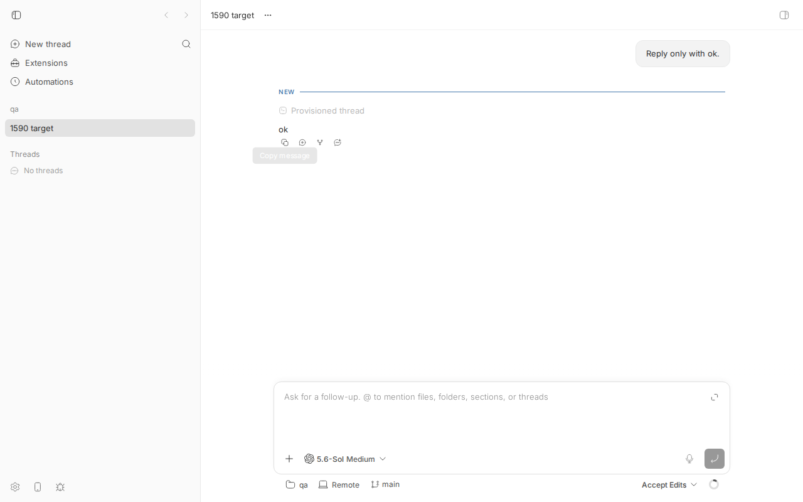
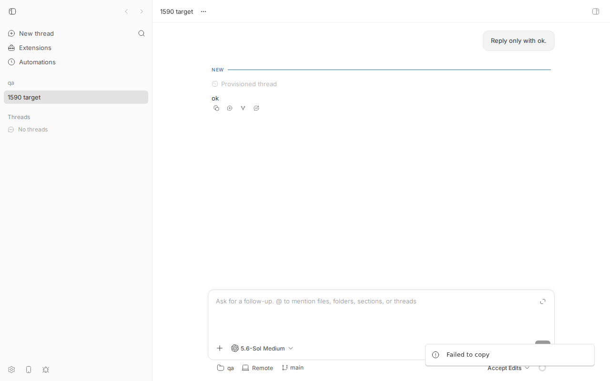
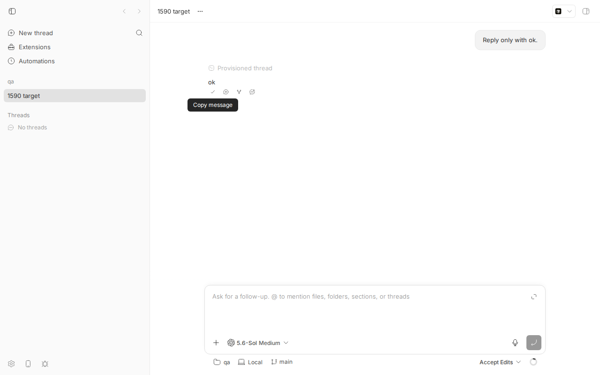

#1590 · Clipboard copy actions fail on plain-HTTP LAN origins
TL;DR
Plain-language framing. bb's web app has one shared "copy to clipboard" helper (apps/app/src/lib/clipboard.ts) behind every copy button and "Copy message" action. That helper only knows one way to copy: the browser's async Clipboard API, navigator.clipboard.writeText(). Browsers expose that API only in a secure context (HTTPS, or http://localhost / 127.0.0.1). When you open bb from another device over a plain-HTTP LAN address such as http://192.0.2.10:38886, the page is not a secure context, navigator.clipboard is undefined, and the helper immediately reports "Failed to copy" without trying anything else.
I reproduced this exactly against 16ceb3a54 in headless Chromium 145: opening the dev app at a real non-loopback IP origin gives isSecureContext:false and navigator.clipboard === undefined; clicking "Copy message" shows the "Failed to copy" toast (screenshots below). The identical click on http://localhost:<port> copies fine. Granting clipboard permissions to the LAN origin does not help, so this is secure-context gating, not permissions. Every helper-backed copy affordance is affected (13 call sites); two plugin call sites (plugins/connect, plugins/github) call navigator.clipboard.writeText directly and are affected in a worse way (synchronous TypeError) — the linked PR does not touch those.
PR #1589 adds the standard fallback (temporary <textarea> + document.execCommand("copy"), which is not secure-context gated when run from a user gesture). Applied on top of the base commit it makes the LAN copy succeed in a real browser (the browser clipboard verifiably contains the copied text afterwards) and also rescues the "API present but rejects" case. My repro unit test fails on main and passes with the PR. Verdict: MERGE, with a couple of small follow-ups (plugin call sites, one guard-rail test).
Claims vs findings
| Claim (issue) | Status | Evidence |
|---|---|---|
| Copy actions fail with "Failed to copy" when bb is opened over a plain-HTTP, non-loopback origin | Verified | Repro step 5: at http://192.0.2.10:26106 the "Copy message" click yields the toast ["Failed to copy"]; screenshot. |
| Clipboard left unchanged | Verified (indirectly) | On main the helper never calls anything but writeText, which does not exist there (navigatorClipboard:"undefined"). With the PR the same click changes the browser clipboard from SENTINEL-before to ok, so the read-back method works and main simply never wrote. |
Root cause: browsers restrict navigator.clipboard.writeText() to secure contexts | Verified | window.isSecureContext === false and typeof navigator.clipboard === "undefined" on the LAN origin; true/"object" on http://localhost in the same browser (out). Granting clipboard-write to the LAN origin makes no difference (db-06.out). |
| The shared helper treats an unavailable/rejecting API as terminal failure | Verified | clipboard.ts L22-L33: if (!navigator.clipboard?.writeText) { toast.error; return false }, and the catch around writeText also just toasts an error. |
| "bb supports this access pattern" | Verified, with a caveat | --server-bind-host 0.0.0.0 / BB_SERVER_BIND_HOST is documented, but "for compatibility only"; the recommended remote routes (bb connect, Tailscale Serve) are HTTPS and unaffected (docs/multiple-devices.md, docs/configuration.md L851). |
| Affects multiple copy actions throughout the app, not one component | Verified (understated) | 13 call sites use the helper (copyToClipboardWithToast/useClipboardCopy: message action bar, file preview, thread metadata commit SHA, environment summary, onboarding login command, updates upgrade command, add-machine command, plugin/skill detail, CopyButton). Additionally plugins/connect/app.tsx L308/L371 and plugins/github/app.tsx L929 call navigator.clipboard.writeText directly and throw a synchronous TypeError on the LAN origin (db-09.out) — not covered by the issue or PR. |
{kind=link}
Environment
- bb
16ceb3a54(main, 2026-08-18); PR #1589 tested as commit31fe6d073cherry-picked onto the base (the PR branch itself is based on the oldere6b7724fa; the cherry-pick applied cleanly, 2 files). - Linux 7.0.0-29-generic, node v24.18.0, headless Chromium
HeadlessChrome/145.0.7632.6(Playwright viadev-browser), codex-cli 0.147.0 (only used to give the thread one assistant message to copy). - Dev instance from worktree
/home/USER/projects/bb/.claude/worktrees/wf_242c3e11-a10-19: apphttp://localhost:16106, server:24106, host daemon:32106, data dir/home/USER/.bb-dev/projects-bb-.claude-worktrees-wf_242c3e11-a10-19-5711df72619c. Projectproj_nu5jy7nj4y(local path/tmp/1590-qa, hosthost_s43589dwat), threadthr_eumrti6rv5. - Non-loopback origin: the dev app binds
127.0.0.1only, so a 20-line TCP forwarder (1590/repro/lan-forward.mjs) listens on the machine's LAN IP192.0.2.10:26106and pipes to127.0.0.1:16106. The browser therefore sees a genuinehttp://192.0.2.10:26106origin. (Use a listen port different from Vite's own port; on my first attempt I forwarded16106→16106and Vite's next restart saw its port "in use" and moved to 16107. Because the forwarded port differs from the app port, the app uses the same-origin/wsVite proxy for its socket, which is what the code does for any reverse-proxied origin.)
Minimal reproduction
- Build and start a dev instance:
pnpm install --frozen-lockfile --prefer-offline && pnpm exec turbo run build && scripts/bb-dev-app current. Note the App port (mine: 16106). - Create a project and one thread with a reply to copy (host id from
bb machine list; any provider, tiny prompt):curl -s -X POST http://localhost:24106/api/v1/projects -H 'content-type: application/json' \ -d '{"name":"qa","source":{"type":"local_path","path":"/tmp/1590-qa","hostId":"host_s43589dwat"}}' BB_SERVER_URL=http://localhost:24106 pnpm bb:dev thread spawn --project proj_nu5jy7nj4y --provider codex \ --permission-mode accept-edits --title "1590 target" --prompt "Reply only with ok." --json # -> thr_eumrti6rv5 - Expose the app on a non-loopback IP (LAN IP from
hostname -I):node 1590/repro/lan-forward.mjs 192.0.2.10 26106:16106(keep it running). - Open the thread from that origin in Chromium and inspect the secure-context state (
db-01-open.js, run withdev-browser --headless run db-01-open.js; edit the IP/port/ids at the top of each script):{"origin":"http://192.0.2.10:26106","isSecureContext":false,"navigatorClipboard":"undefined","writeText":"undefined","execCommand":"function","ua":"... HeadlessChrome/145.0.7632.6 ..."} - Hover the assistant reply "ok" and click its Copy message action (
db-04-click-copy.js). Expected: text copied, check-mark feedback. Actual:["Failed to copy"] # toast text collected from [data-sonner-toast]

Before the click: thread opened at http://192.0.2.10:26106, hovering the first icon under "ok" (the "Copy message" action).
The moment of the bug: bottom-right toast reads Failed to copy; no copied check-mark on the action bar. - Control: same thread, same browser, at
http://localhost:16106(db-05-control-localhost.js; Playwright needsgrantPermissions(["clipboard-write"]), a real Chrome grants this to the page by default):{"origin":"http://localhost:16106","isSecureContext":true,"navigatorClipboard":"object"} [] # no error toast clipboard now contains: "ok"
Control on localhost: the copy icon turned into a check-mark andnavigator.clipboard.readText()returnsok. - Not a permissions problem: granting
clipboard-read/clipboard-writeto the LAN origin and clicking again (db-06) still yieldsnavigatorClipboard:"undefined"and["Failed to copy"].
Unit-level repro (fails on main, passes with PR #1589)
File: 1590/repro/issue-1590-insecure-origin-copy.test.ts. Copy to apps/app/src/lib/ and run cd apps/app && pnpm exec vitest run --config vitest.config.ts src/lib/issue-1590-insecure-origin-copy.test.ts. It removes navigator.clipboard (what the browser exposes on the LAN origin), provides a working document.execCommand("copy"), and asserts the shared helper still copies.
// @vitest-environment jsdom
import { afterEach, describe, expect, it, vi } from "vitest";
const toastMocks = vi.hoisted(() => ({ error: vi.fn(), success: vi.fn() }));
vi.mock("@/components/ui/app-toast", () => ({ appToast: toastMocks }));
import { copyToClipboardWithToast } from "./clipboard";
afterEach(() => {
toastMocks.error.mockReset();
toastMocks.success.mockReset();
document.body.replaceChildren();
});
describe("issue #1590: copy on an insecure (plain-HTTP LAN) origin", () => {
it("copies through document.execCommand('copy') when navigator.clipboard is absent", async () => {
// Exactly what Chrome/Firefox/Safari expose on http://192.168.x.x:port
Object.defineProperty(navigator, "clipboard", { configurable: true, value: undefined });
let copiedValue: string | null = null;
Object.defineProperty(document, "execCommand", {
configurable: true,
value: vi.fn((command: string) => {
if (command !== "copy") return false;
const active = document.activeElement;
copiedValue = active instanceof HTMLTextAreaElement ? active.value : null;
return true;
}),
});
const ok = await copyToClipboardWithToast("hello from LAN", {
successMessage: "Copied",
errorMessage: "Failed to copy",
});
expect(ok).toBe(true);
expect(copiedValue).toBe("hello from LAN");
expect(toastMocks.error).not.toHaveBeenCalled();
expect(toastMocks.success).toHaveBeenCalledWith("Copied");
});
});
$ git checkout 16ceb3a54 && cd apps/app && pnpm exec vitest run --config vitest.config.ts src/lib/issue-1590-insecure-origin-copy.test.ts
FAIL src/lib/issue-1590-insecure-origin-copy.test.ts > issue #1590: copy on an insecure (plain-HTTP LAN) origin > copies through document.execCommand('copy') when navigator.clipboard is absent
AssertionError: expected false to be true // Object.is equality
❯ src/lib/issue-1590-insecure-origin-copy.test.ts:45:16
45| expect(ok).toBe(true);
Test Files 1 failed (1)
$ git cherry-pick 31fe6d073 # PR #1589 on top of the base
$ pnpm exec vitest run --config vitest.config.ts src/lib/issue-1590-insecure-origin-copy.test.ts
Test Files 1 passed (1)
Tests 1 passed (1)
Full outputs: repro-test-main.out, repro-test-pr1589.out. The first assertion fails on main because the helper's very first branch returns false and toasts the error when navigator.clipboard?.writeText is missing.
Root cause
The Clipboard interface is marked [SecureContext] in the W3C Clipboard API, so in Chrome, Firefox and Safari navigator.clipboard is simply undefined on an origin that is not "potentially trustworthy". http://localhost, http://127.0.0.1, https://… and file: are trustworthy; http://192.0.2.10:26106 or http://my-box.local:38886 are not (my measurement: isSecureContext:false, navigatorClipboard:"undefined"). The shared helper is written as if the API were always there:
// apps/app/src/lib/clipboard.ts (16ceb3a54)
export async function copyToClipboardWithToast(text, { successMessage = "Copied", errorMessage = "Failed to copy" } = {}) {
if (typeof navigator === "undefined" || !navigator.clipboard?.writeText) {
if (errorMessage) appToast.error(errorMessage); // <-- LAN origin lands here every time
return false;
}
try {
await navigator.clipboard.writeText(text);
if (successMessage) appToast.success(successMessage);
return true;
} catch {
if (errorMessage) appToast.error(errorMessage); // and a present-but-rejecting API lands here
return false;
}
}
clipboard.ts#L15-L34. useClipboardCopy (L40-L62) wraps the same function, so CopyButton and every hook consumer inherit the failure. The helper was consolidated from per-component copies in a83c12946 (#1544, 2026-08-13); the previous per-component code had the same single-strategy shape, so this is not a regression of that refactor, just the first time all copy affordances share one behavior.
Why the symptom follows. With navigator.clipboard undefined the first branch fires synchronously: error toast, false, and no attempt to use the legacy path (document.execCommand("copy")) that browsers still allow on insecure origins when invoked from a user gesture. There is no configuration on the server that changes this: it is a property of the browser's origin classification, so a Tailscale-Serve/HTTPS or bb-connect route is unaffected while a --server-bind-host 0.0.0.0 LAN URL is always affected.
Deeper/adjacent issue. Two plugin UIs bypass the helper: plugins/connect/app.tsx (L307-L320, L370-L381) and plugins/github/app.tsx (L926-L935). They do navigator.clipboard.writeText(url).then(ok, fail); the connect one even has a comment "Locked-down / insecure contexts reject: keep the user unblocked" — but on an insecure origin the call throws a synchronous TypeError: Cannot read properties of undefined (reading 'writeText') (measured, db-09.out) before .then is ever reached, so the "manual / press ⌘C" fallback never runs. Plugins cannot import @/lib/clipboard; a fix there means either a plugin-SDK helper or a local guard.
Proposed fix (first principles)
- Two-strategy helper (what PR #1589 does). Try
navigator.clipboard.writeTextif present; on absence or rejection, synchronously create an off-screen<textarea>, select it,document.execCommand("copy"), remove it, restore focus/selection. The key constraint is that the fallback must run inside the user gesture: with the API absent there is noawaitbeforeexecCommand, and with the API present-but-rejecting the microtask hop keeps Chrome's ~5 s transient activation, so both branches remain gesture-eligible. Onlyapps/appchanges; no server, daemon, or protocol impact. - Cover the plugin call sites. Either export a clipboard helper from
@get-bb/plugin-sdk/app(would need theexperimental_prefix and andocs/api_to_audit.mdentry per AGENTS.md) or, cheaper, guard the three directnavigator.clipboard.writeTextcalls with the same textarea fallback locally. - What could go wrong:
execCommandis deprecated (still shipped by every engine); the fallback briefly moves focus, which triggersbluron the previously focused element (e.g. the prompt editor) — harmless for the current call sites, but a future caller that closes a popover on blur would need the modern path first (which the helper does). iOS Safari + LAN was not tested here (no device); the textarea/setSelectionRangeapproach is the widely used one for iOS.
PR review
#1589 Fix clipboard copy on insecure origins (Willhong, head 31fe6d073, base e6b7724fa)
What it changes. Two files (diff): apps/app/src/lib/clipboard.ts gains copyWithEditingCommand(text) (temporary read-only <textarea>, select() + setSelectionRange, execCommand("copy"), always removes the node and restores previous activeElement and selection ranges) and an exported copyTextToClipboard(text): Promise<boolean> that tries navigator.clipboard.writeText first and falls through to the editing command on absence or rejection; copyToClipboardWithToast now delegates to it and toasts only the final outcome. New clipboard.test.ts with 5 jsdom tests (API success, API absent → fallback, API rejects → fallback, both fail → focus restored + false, toast only after both fail).
Does it address the root cause? Yes. The cause is "only one strategy, and that strategy is unavailable in insecure contexts"; the PR adds the only other strategy browsers offer, in the right order (modern first), and it is the correct layer (client-only helper; nothing crosses the server/daemon boundary, so no HOST_DAEMON_PROTOCOL_VERSION concern). No casts, no unknown, no any.
Tests I ran (PR cherry-picked onto 16ceb3a54, clean apply):
pnpm exec vitest run --config vitest.config.ts src/lib/clipboard.test.ts→ 5 passed (out).pnpm exec turbo run typecheck --filter=@bb/app→ ok.- My repro test above: fails on base, passes with the PR.
- Real browser, LAN origin (
db-07,out): seeded the browser clipboard withSENTINEL-beforefrom the localhost tab, clicked "Copy message" onhttp://192.0.2.10:26106(stillisSecureContext:false,navigator.clipboardundefined) → no error toast,leftoverTextarea:0, active element unchanged, and the localhost tab reads backclipboard after: ok. Screenshot: 1590-pr1589-lan-copied.png (check-mark on the action bar, no toast). - Real browser, "API present but rejects" branch (
db-08,out): onlocalhostwith clipboard permission revoked,writeTextrejects withNotAllowedError: Write permission denied; the click still copies (clipboardSENTINEL-08 → ok). On main this same setup shows "Failed to copy" (my first control run, before granting permission).
{kind=link}
Findings (none blocking):
| Where | Severity | Finding |
|---|---|---|
plugins/connect/app.tsx:308,371, plugins/github/app.tsx:929 | Low (out of PR scope, but same bug) | Direct navigator.clipboard.writeText(url).then(...) throws synchronously on insecure origins, so the connect plugin's advertised "Press ⌘C" fallback never triggers. Not fixed by this PR; worth a follow-up (see Proposed fix 2). The PR description's "Copy actions now continue to…" is only true for helper-backed actions. |
apps/app/src/lib/clipboard.ts copyTextToClipboard | Low (test gap) | Correctness depends on the fallback running synchronously in the gesture when the API is absent (no await on that path). Nothing guards that: a future "harmless" await before the fallback would silently break Safari/Firefox LAN copies while all 5 tests keep passing (they mock execCommand and only inspect after await). Suggest one assertion: with the API absent, call copyTextToClipboard() without awaiting and assert execCommand was already invoked. |
copyWithEditingCommand focus juggling | Info | textarea.focus() blurs the previously focused element (prompt editor, dialog input) for a tick before restoring; I observed activeBefore === activeAfter in the real browser and no leftover node. Any blur-driven UI (e.g. a popover that closes on focus-out) would only be affected on the fallback path. Acceptable. |
textarea.setAttribute("aria-hidden","true") + focus | Info | An aria-hidden element momentarily holds focus (axe "aria-hidden-focus"); transient and removed synchronously, screen readers will not announce it in practice. Could drop aria-hidden and rely on the 1×1 opacity-0 fixed positioning, or keep as is. |
| iOS Safari | Unverified | The issue's scenario ("another device") is often a phone. I have no iOS device/simulator here; the textarea + setSelectionRange approach is the standard one that works on iOS ≥ 10, and readOnly=true avoids the keyboard flash. Please smoke-test once on an iPhone over LAN before/after merge. |
| PR branch base | Info | Branch is based on e6b7724fa, ~1000 files behind main; GitHub reports it mergeable and the cherry-pick onto 16ceb3a54 is clean. Rebase optional. |
Verdict: MERGE. Fixes the root cause at the right layer, well-scoped, tested at unit level and verified by me in a real insecure-origin browser session. Follow-ups: plugin call sites and the sync-gesture guard test.
Related issues
- #1754:
BB_SERVER_BIND_HOSTis loopback-or-wildcard only — the same plain-HTTP LAN access mode this bug lives in. - #1764 / #1763: mobile terminal copy/paste controls — will hit the same secure-context gating if built on
navigator.clipboardand used over LAN. - #1571: "Copy thread reference" in the sidebar menu — should use the shared helper so it inherits the fallback.
- #1440: app chrome included in text selection (adjacent copy UX).
- #1544 (merged,
a83c12946): the refactor that consolidated the helper this PR extends.
Appendix
Commands run
# worktree /home/USER/projects/bb/.claude/worktrees/wf_242c3e11-a10-19, git checkout 16ceb3a54
pnpm install --frozen-lockfile --prefer-offline
pnpm exec turbo run build
scripts/bb-dev-app current # app :16106, server :24106, daemon :32106
mkdir -p /tmp/1590-qa; git -C /tmp/1590-qa init -q; echo hi > /tmp/1590-qa/README.md; git -C /tmp/1590-qa add .; git -C /tmp/1590-qa commit -qm init
curl -s -X POST http://localhost:24106/api/v1/projects -H 'content-type: application/json' \
-d '{"name":"qa","source":{"type":"local_path","path":"/tmp/1590-qa","hostId":"host_s43589dwat"}}' # proj_nu5jy7nj4y
BB_SERVER_URL=http://localhost:24106 pnpm bb:dev thread spawn --project proj_nu5jy7nj4y --provider codex \
--permission-mode accept-edits --title "1590 target" --prompt "Reply only with ok." --json # thr_eumrti6rv5
node 1590/repro/lan-forward.mjs 192.0.2.10 26106:16106 & # (first attempt 16106:16106 collided with Vite's port probe; restarted the dev instance)
dev-browser --headless run 1590/repro/db-01-open.js # secure-context state on the LAN origin
dev-browser --headless run 1590/repro/db-03-openthread.js # screenshot before
dev-browser --headless run 1590/repro/db-04-click-copy.js # click Copy message -> "Failed to copy"
dev-browser --headless run 1590/repro/db-05-control-localhost.js
dev-browser --headless run 1590/repro/db-06-lan-with-permission.js
dev-browser --headless run 1590/repro/db-09-plugin-callsite.js # direct writeText throws TypeError on LAN origin
cp 1590/repro/issue-1590-insecure-origin-copy.test.ts apps/app/src/lib/ && (cd apps/app && pnpm exec vitest run --config vitest.config.ts src/lib/issue-1590-insecure-origin-copy.test.ts) # FAILS on base
# PR #1589
gh pr checkout 1589; git checkout 16ceb3a54; git checkout -b pr1589-on-base; git cherry-pick 31fe6d073
(cd apps/app && pnpm exec vitest run --config vitest.config.ts src/lib/clipboard.test.ts) # 5 passed
pnpm exec turbo run typecheck --filter=@bb/app
(cd apps/app && pnpm exec vitest run --config vitest.config.ts src/lib/issue-1590-insecure-origin-copy.test.ts) # passes
dev-browser --headless run 1590/repro/db-07-pr1589-lan.js # LAN copy now works; clipboard read back = "ok"
dev-browser --headless run 1590/repro/db-08-pr1589-rejecting-api.js
pnpm dev:stop
Raw browser outputs
--- main 16ceb3a54 (1590/repro/main-16ceb3a54-browser.out)
$ dev-browser --headless run db-01-open.js
{"origin":"http://192.0.2.10:16106","isSecureContext":false,"navigatorClipboard":"undefined","writeText":"undefined","execCommand":"function","ua":"Mozilla/5.0 (X11; Linux x86_64) AppleWebKit/537.36 (KHTML, like Gecko) HeadlessChrome/145.0.7632.6 Safari/537.36"}
$ dev-browser --headless run db-04-click-copy.js
["Failed to copy"]
$ dev-browser --headless run db-05-control-localhost.js
granted clipboard permissions for localhost origin
{"origin":"http://localhost:16106","isSecureContext":true,"navigatorClipboard":"object"}
[]
clipboard now contains: "ok"
$ dev-browser --headless run db-06-lan-with-permission.js
granted clipboard permissions for LAN origin
{"origin":"http://192.0.2.10:16106","isSecureContext":false,"navigatorClipboard":"undefined"}
["Failed to copy"]
$ dev-browser --headless run db-09-plugin-callsite.js
sync throw: TypeError: Cannot read properties of undefined (reading 'writeText')
--- PR #1589 on 16ceb3a54 (forwarder moved to :26106)
$ dev-browser --headless run db-07-pr1589-lan.js
clipboard before: SENTINEL-before
{"origin":"http://192.0.2.10:26106","isSecureContext":false,"navigatorClipboard":"undefined","activeBefore":"DIV"}
toasts: []
{"leftoverTextarea":0,"activeAfter":"DIV"}
clipboard after: ok
$ dev-browser --headless run db-08-pr1589-rejecting-api.js
clipboard before: SENTINEL-08
writeText rejected: NotAllowedError: Failed to execute 'writeText' on 'Clipboard': Write permission denied.
toasts: []
clipboard after: ok
Helper call sites on 16ceb3a54 (all affected)
apps/app/src/components/thread/timeline/MessageActionBar.tsx:145,250 copyToClipboardWithToast apps/app/src/views/thread-detail/ThreadDetailView.tsx:2345,2355 copyToClipboardWithToast (file link path / basename) apps/app/src/components/secondary-panel/FilePreview.tsx:805 copyToClipboardWithToast apps/app/src/components/secondary-panel/ThreadMetadataContent.tsx:771 copyToClipboardWithToast (commit sha) apps/app/src/components/promptbox/ThreadEnvironmentSummary.tsx:93 copyToClipboardWithToast (checkout command) apps/app/src/components/onboarding/OnboardingFlow.tsx:244 copyToClipboardWithToast (login command) apps/app/src/components/settings/UpdatesSettingsSection.tsx:371 copyToClipboardWithToast (upgrade command) apps/app/src/components/dialogs/AddMachineDialog.tsx:184 useClipboardCopy (install command) apps/app/src/components/tools/PluginDetail.tsx:81 useClipboardCopy apps/app/src/components/tools/SkillDetailView.tsx:72 useClipboardCopy apps/app/src/components/ui/copy-button.tsx:34,82 useClipboardCopy (CopyButton, used by markdown code blocks, diff header, mermaid, log dialog) -- not helper-backed, also broken on insecure origins (sync TypeError): plugins/connect/app.tsx:308,371 navigator.clipboard.writeText plugins/github/app.tsx:929 navigator.clipboard.writeText